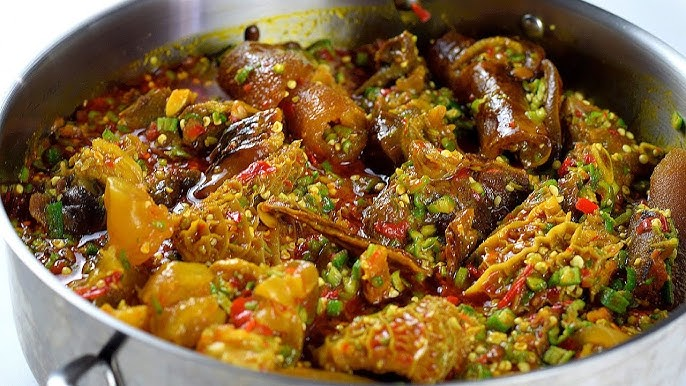

Okro Soup

Description
Okro soup is a traditional Nigerian dish known for
its rich flavor and characteristic slippery texture. It is prepared
using finely chopped okra cooked with palm oil, assorted meats or
fish, and local seasonings. Popular across many regions, okro soup
is commonly served with swallows such as eba, fufu, or pounded yam.
Ingidients
- Fresh okra
- Palm oil
- Onions
- Scotch bonnet peppers
- Crayfish
- Locust beans (iru)
- Assorted meat (beef, tripe, goat meat)
- Smoked fish or stockfish
- Meat stock
- Spinach or ugu leaves (optional)
- Salt
- Seasoning cubes or powder
Steps
- Cook assorted meat and fish until tender and set aside with the stock.
- Heat palm oil and add onions and peppers.
- Add okra and stir gently.
- Add crayfish, locust beans, and seasoning.
- Pour in meat stock and allow to simmer briefly.
- Add vegetables if used and stir.
- Adjust seasoning and cook until done.
- Serve with preferred swallow.
Home